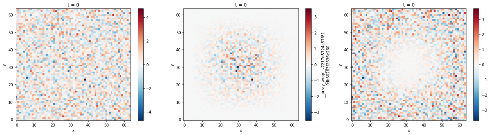

In [1]:
import numpy as np
import xarray as xr
import dask.array as dsar
import xrft
import matplotlib.pyplot as plt
%matplotlib inline
Prepare data¶
Input data¶
We generate a synthetic xarray dataarray.
In [2]:
N = 64
da = xr.DataArray(np.random.randn(N,N,N),
dims=['t','y','x'],
coords={'t':range(N),'y':range(N),'x':range(N)}
)
da
Out[2]:
<xarray.DataArray (t: 64, y: 64, x: 64)>
array([[[-0.783859, -1.057248, ..., -1.252546, -0.571897],
[-1.402745, 1.759533, ..., 0.250848, 1.147961],
...,
[ 1.176843, -1.474593, ..., -1.17289 , -0.077685],
[ 0.891583, 1.997513, ..., 0.85798 , 0.485725]],
[[ 0.344077, -0.388393, ..., -0.343084, -0.714515],
[-0.581167, -0.410804, ..., 1.918492, -0.190355],
...,
[-0.715925, 2.115661, ..., 0.41837 , -0.207243],
[-0.145881, 0.607971, ..., 0.025433, 1.51348 ]],
...,
[[ 1.586975, -0.030569, ..., 0.535883, -0.305217],
[ 0.128486, -0.532372, ..., 1.019406, -0.213997],
...,
[-0.459844, -0.01134 , ..., 0.020677, 0.767405],
[-1.407846, -0.862802, ..., -1.502858, 0.135768]],
[[ 0.844967, -0.287532, ..., 1.368076, 0.065382],
[ 0.163447, -0.397656, ..., 0.055952, 1.139591],
...,
[ 1.029448, 0.692356, ..., 0.148188, -1.013243],
[-0.059498, 0.326565, ..., 2.044263, 0.496434]]])
Coordinates:
* t (t) int64 0 1 2 3 4 5 6 7 8 9 10 11 12 13 14 15 16 17 18 19 20 ...
* y (y) int64 0 1 2 3 4 5 6 7 8 9 10 11 12 13 14 15 16 17 18 19 20 ...
* x (x) int64 0 1 2 3 4 5 6 7 8 9 10 11 12 13 14 15 16 17 18 19 20 ...
We add a linear trend to the data.
In [3]:
da_lin = da + np.linspace(0,16,N)[np.newaxis,np.newaxis,:] + np.linspace(0,32,N)[np.newaxis,:,np.newaxis]
da_lin
Out[3]:
<xarray.DataArray (t: 64, y: 64, x: 64)>
array([[[ -7.838590e-01, -8.032796e-01, ..., 1.449349e+01, 1.542810e+01],
[ -8.948087e-01, 2.521437e+00, ..., 1.650482e+01, 1.765590e+01],
...,
[ 3.266891e+01, 3.027144e+01, ..., 4.606520e+01, 4.741438e+01],
[ 3.289158e+01, 3.425148e+01, ..., 4.860401e+01, 4.848572e+01]],
[[ 3.440774e-01, -1.344251e-01, ..., 1.540295e+01, 1.528549e+01],
[ -7.323009e-02, 3.511003e-01, ..., 1.817246e+01, 1.631758e+01],
...,
[ 3.077614e+01, 3.386169e+01, ..., 4.765647e+01, 4.728482e+01],
[ 3.185412e+01, 3.286194e+01, ..., 4.777146e+01, 4.951348e+01]],
...,
[[ 1.586975e+00, 2.233997e-01, ..., 1.628191e+01, 1.569478e+01],
[ 6.364223e-01, 2.295332e-01, ..., 1.727337e+01, 1.629394e+01],
...,
[ 3.103222e+01, 3.173469e+01, ..., 4.725877e+01, 4.825947e+01],
[ 3.059215e+01, 3.139117e+01, ..., 4.624317e+01, 4.813577e+01]],
[[ 8.449669e-01, -3.356402e-02, ..., 1.711411e+01, 1.606538e+01],
[ 6.713831e-01, 3.642490e-01, ..., 1.630992e+01, 1.764753e+01],
...,
[ 3.252151e+01, 3.243839e+01, ..., 4.738628e+01, 4.647882e+01],
[ 3.194050e+01, 3.258053e+01, ..., 4.979029e+01, 4.849643e+01]]])
Coordinates:
* t (t) int64 0 1 2 3 4 5 6 7 8 9 10 11 12 13 14 15 16 17 18 19 20 ...
* y (y) int64 0 1 2 3 4 5 6 7 8 9 10 11 12 13 14 15 16 17 18 19 20 ...
* x (x) int64 0 1 2 3 4 5 6 7 8 9 10 11 12 13 14 15 16 17 18 19 20 ...
Perform DFT¶
We detrend and window the data before taking the DFT in the x-y
axes.
In [4]:
ft = xrft.dft(da_lin.chunk({'t':1}), dim=['x','y'], detrend='linear', window=True, shift=False)
ft
/Users/uchidatakaya/Documents/Python/xrft/xrft/xrft.py:272: FutureWarning: xarray.DataArray.__contains__ currently checks membership in DataArray.coords, but in xarray v0.11 will change to check membership in array values.
elif d in da:
Out[4]:
<xarray.DataArray 'fftn-5d3f665ba72ac3c151a5a49181a2a394' (t: 64, freq_y: 64, freq_x: 64)>
dask.array<shape=(64, 64, 64), dtype=complex128, chunksize=(1, 64, 64)>
Coordinates:
* t (t) int64 0 1 2 3 4 5 6 7 8 9 10 11 12 13 14 15 16 17 18 ...
* freq_y (freq_y) float64 0.0 0.01562 0.03125 0.04688 0.0625 ...
* freq_x (freq_x) float64 0.0 0.01562 0.03125 0.04688 0.0625 ...
freq_x_spacing float64 0.01562
freq_y_spacing float64 0.01562
In [5]:
da_detrended = xr.DataArray(dsar.fft.ifft2(ft.data, axes=[-2,-1]).real,
dims=da.dims, coords=da.coords)
In [7]:
fig, (ax1,ax2,ax3) = plt.subplots(nrows=1, ncols=3, figsize=(18,5))
fig.set_tight_layout(True)
da[0].plot(ax=ax1)
da_detrended[0].plot(ax=ax2)
(da-da_detrended)[0].plot(ax=ax3)
Out[7]:
<matplotlib.collections.QuadMesh at 0x11ceaacc0>
/Users/uchidatakaya/anaconda/envs/uptodate/lib/python3.6/site-packages/matplotlib/figure.py:1743: UserWarning: This figure includes Axes that are not compatible with tight_layout, so its results might be incorrect.
warnings.warn("This figure includes Axes that are not "

We see that outside of the windowed region, da and da_detrended have close values to each other.
In [ ]: